Paridade visual dos 3 pilotos — A/B para aceite
Gerado por test/moves-vfx-parity.browser.mjs em 2026-10-28T16:50:29.878Z. A ROI é a caixa do efeito na tela, projetada da posição 3D do evento/entidade com a câmera do jogo (mais um raio e uma margem).
- Compare as três imagens de cada efeito abaixo. Dentro da ROI mostra se o efeito mudou; Fora da ROI mostra mudança de câmera, cenário, painéis ou instante.
- O teste nunca escreve em
baselines/. Rodar com--update-baselinessó grava candidatas embaselines-candidatas/e refaz esta página. - Para aceitar um efeito: copie
baselines-candidatas/<efeito>.pngpor cima debaselines/<efeito>.pngà mão, ou rode na raiz do projetonode prototypes/combat-lab/test/moves-vfx-parity.browser.mjs --aceitar=<efeito>(um efeito por vez). - Depois confira com
git diff --state faça o commit da baseline aceita.
sand-wave-ativo
abaixo de 98% — precisa de decisão humana- Semelhança global
- 65.61%
- Dentro da ROI
- 31.24%
- Fora da ROI
- 81.05%
- Pixels diferentes (ROI / fora)
- 268651 / 164693
- Caixa ROI (px)
- x 70–745, y 182–759
- Dono (despachante F5)
- movesVfx (moves-vfx-registry → sand-wave.vfx.js) · canal move

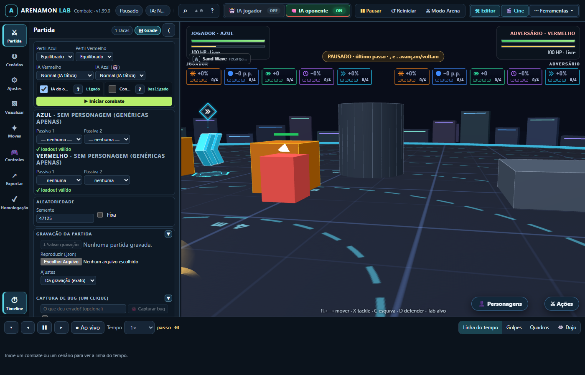

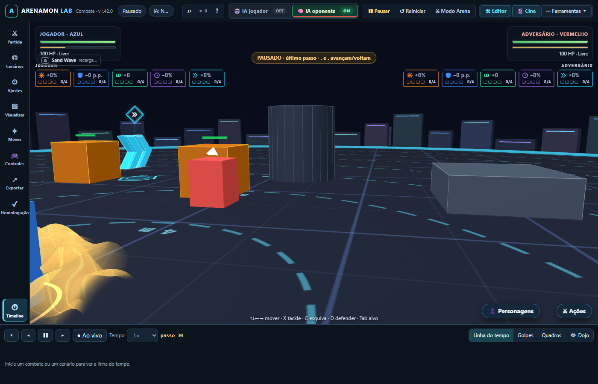

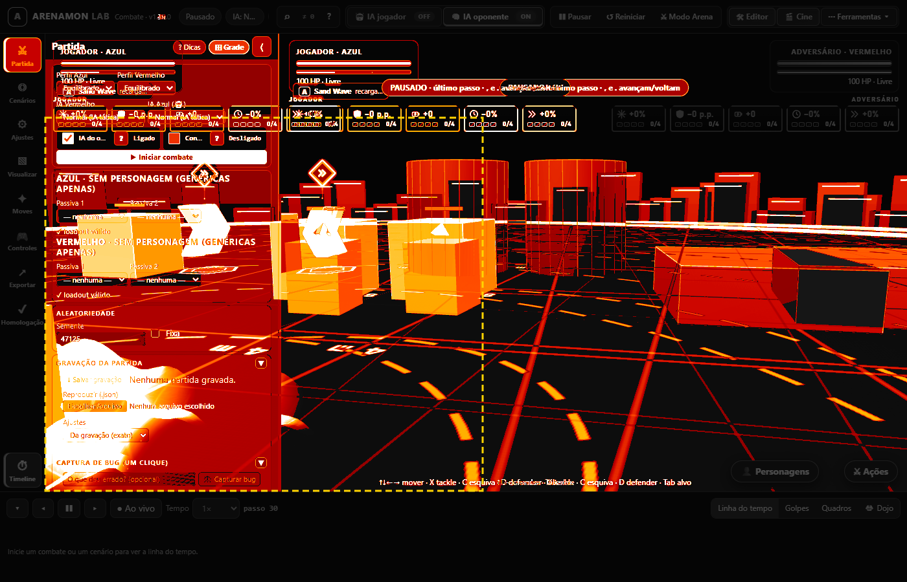
Diferença relevante FORA da ROI (18.9% dos pixels de fora): câmera, cena, HUD, layout ou instante mudaram — a ROI sozinha não isola o efeito, e dentro dela a mudança é ainda maior. ROI 31.24% (268651/390728 px diferentes), fora 81.05% (164693/869272 px); 62.0% de todos os pixels diferentes estão na ROI. Análise (2026-10-28): Falha de layout, não do efeito. No layout padrão: global 65,6%, ROI 31,3%, fora 81,1%; a ROI cai mais que o resto porque na baseline a barragem fica quase toda ESCONDIDA atrás do painel lateral, e na captura atual ela aparece inteira no canto inferior esquerdo. Com o painel reaberto: global 99,13%, ROI 96,25%, fora 99,97% — o resto (~3,7% da ROI) é ruído de partículas de areia (a semente da partida é aleatória: 94438 na baseline × outra a cada execução; repetições deram ROI 96,1–96,9%). Não é regressão desta branch.
Candidata: baselines-candidatas/sand-wave-ativo.png · aceitar: node prototypes/combat-lab/test/moves-vfx-parity.browser.mjs --aceitar=sand-wave-ativo

bullet-punch-vanish
abaixo de 98% — precisa de decisão humana- Semelhança global
- 64.82%
- Dentro da ROI
- 14.8%
- Fora da ROI
- 76.38%
- Pixels diferentes (ROI / fora)
- 201530 / 241729
- Caixa ROI (px)
- x 70–543, y 261–759
- Dono (despachante F5)
- movesVfx (moves-vfx-registry → bullet-punch.vfx.js, rush) · canal move

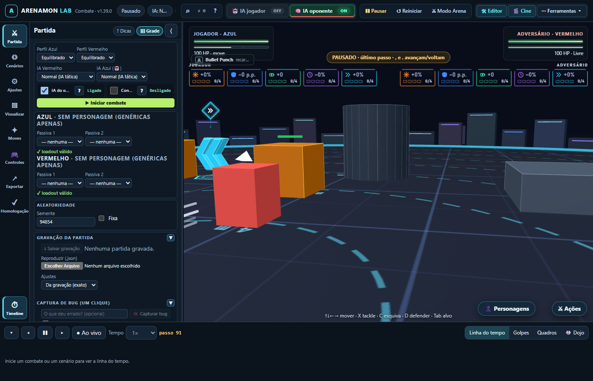

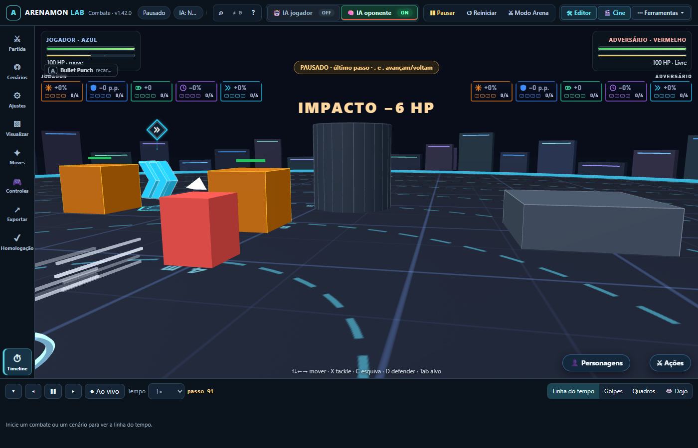

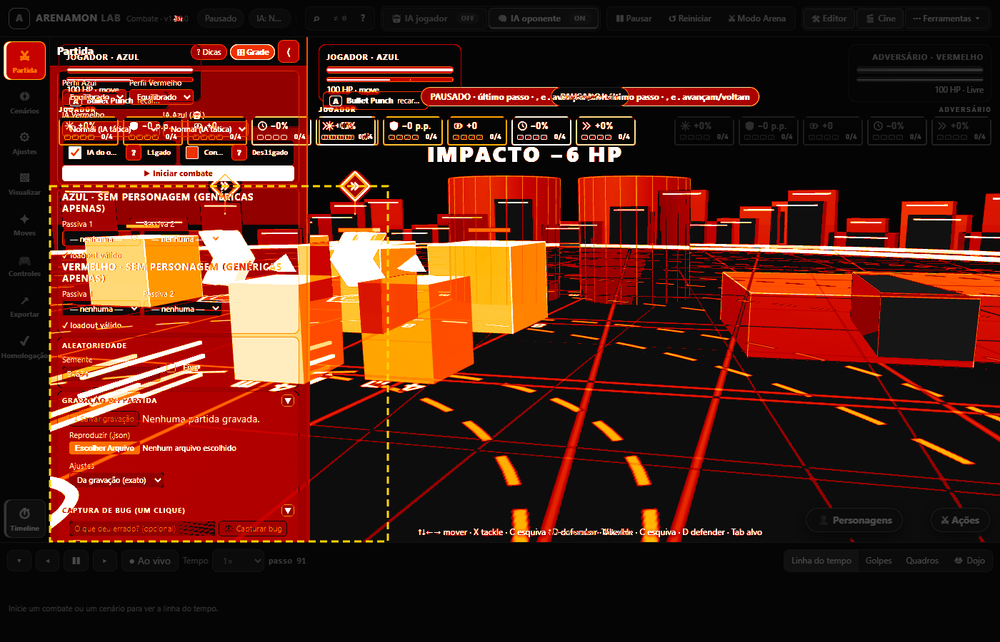
Diferença relevante FORA da ROI (23.6% dos pixels de fora): câmera, cena, HUD, layout ou instante mudaram — a ROI sozinha não isola o efeito, e dentro dela a mudança é ainda maior. ROI 14.8% (201530/236526 px diferentes), fora 76.38% (241729/1023474 px); 45.5% de todos os pixels diferentes estão na ROI. Análise (2026-10-28): Falha de layout, não do efeito. Padrão: global 64,8%, ROI 14,8%, fora 76,4%; a ROI (trajeto atacante→alvo) está na faixa que a baseline cobria com o painel. Com o painel reaberto: global 99,26%, ROI 96,37%, fora 99,64%; o restante dentro da ROI são partículas e pós-imagens do rush (aleatórias). O evento do instante (bulletVanish) é SEM_VISUAL no despachante F5 e o rush é desenhado pelo movesVfx pelo estado do lutador, então o despachante não altera esta captura. Não é regressão desta branch.
Candidata: baselines-candidatas/bullet-punch-vanish.png · aceitar: node prototypes/combat-lab/test/moves-vfx-parity.browser.mjs --aceitar=bullet-punch-vanish

bullet-punch-impacto
abaixo de 98% — precisa de decisão humana- Semelhança global
- 63.41%
- Dentro da ROI
- 8.87%
- Fora da ROI
- 69.73%
- Pixels diferentes (ROI / fora)
- 119189 / 341797
- Caixa ROI (px)
- x 203–548, y 232–609
- Dono (despachante F5)
- movesVfx (moves-vfx-registry → bullet-punch.vfx.js, rush) · canal move

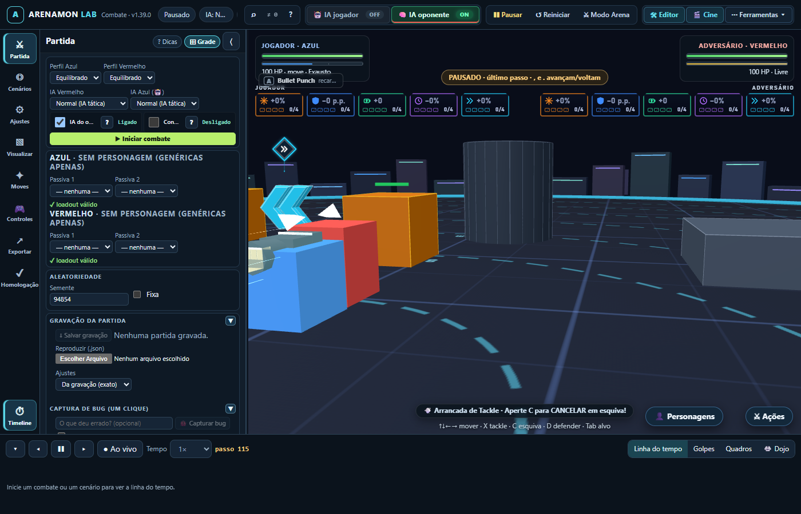

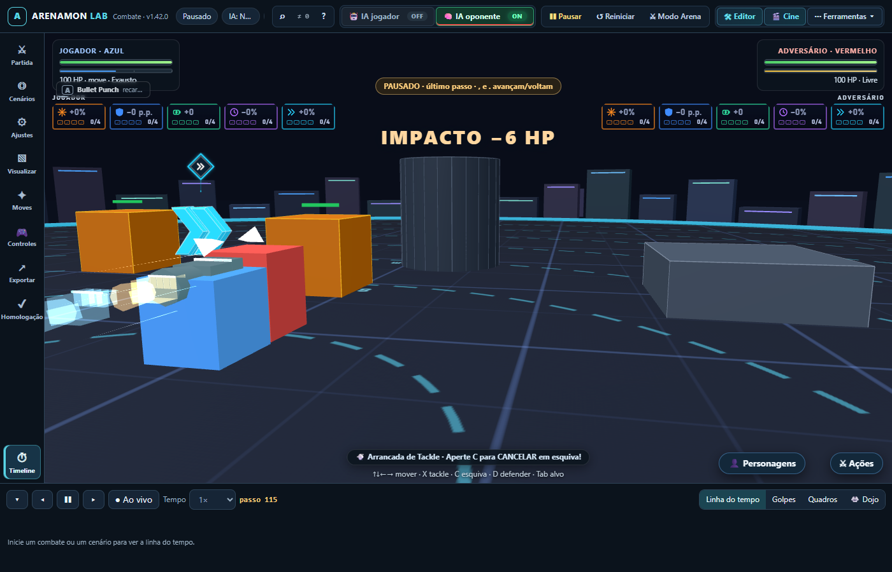

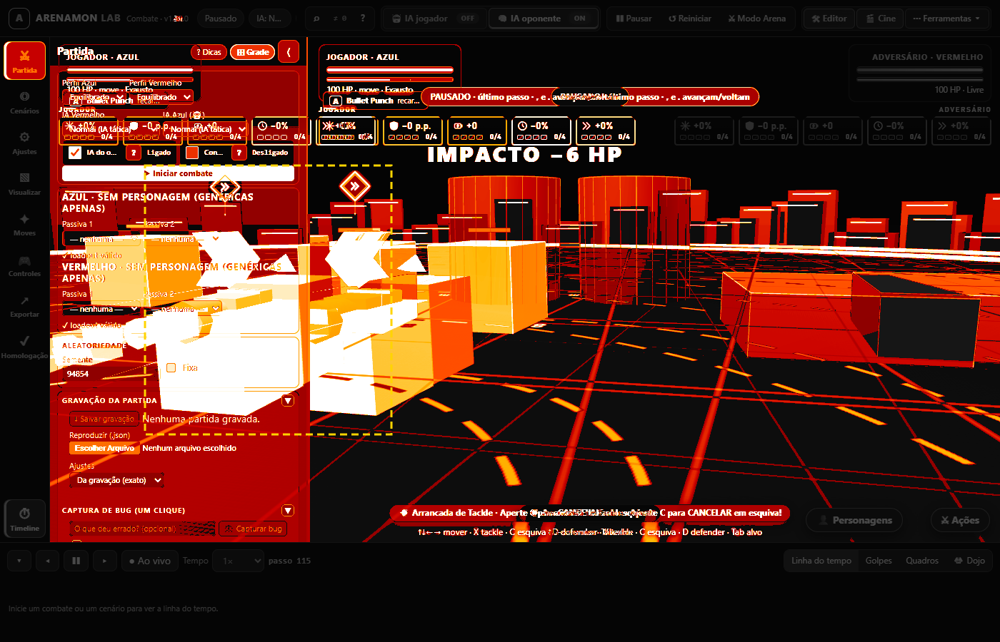
Diferença relevante FORA da ROI (30.3% dos pixels de fora): câmera, cena, HUD, layout ou instante mudaram — a ROI sozinha não isola o efeito, e dentro dela a mudança é ainda maior. ROI 8.87% (119189/130788 px diferentes), fora 69.73% (341797/1129212 px); 25.9% de todos os pixels diferentes estão na ROI. Análise (2026-10-28): Falha de layout, não do efeito. Padrão: global 63,4%, ROI 9,1%, fora 69,7% (a ROI do impacto fica inteira sobre a área que era painel na baseline). Com o painel reaberto: global 99,31%, ROI 95,33%, fora 99,70%; o resto da ROI são faíscas/partículas do impacto metálico. bulletReturn → movesVfx (canal move) e impact → um dono por canal (partículas vfx no modo padrão), ambos sem desconhecidos no despachante. Não é regressão desta branch.
Candidata: baselines-candidatas/bullet-punch-impacto.png · aceitar: node prototypes/combat-lab/test/moves-vfx-parity.browser.mjs --aceitar=bullet-punch-impacto

water-pulse-voo
abaixo de 98% — precisa de decisão humana- Semelhança global
- 64.91%
- Dentro da ROI
- 4%
- Fora da ROI
- 71.74%
- Pixels diferentes (ROI / fora)
- 121880 / 320247
- Caixa ROI (px)
- x 70–372, y 294–712
- Dono (despachante F5)
- movesVfx (moves-vfx-registry → water-pulse.vfx.js) · canal move

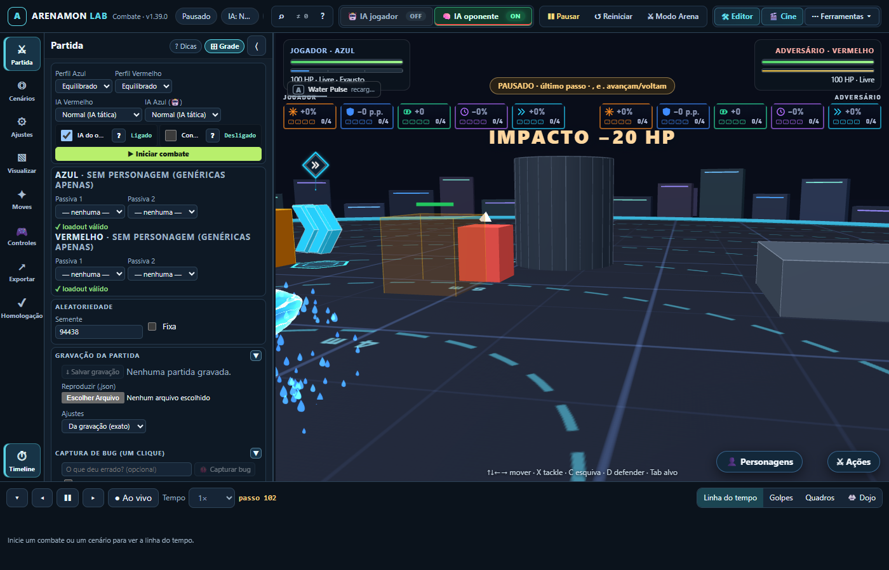

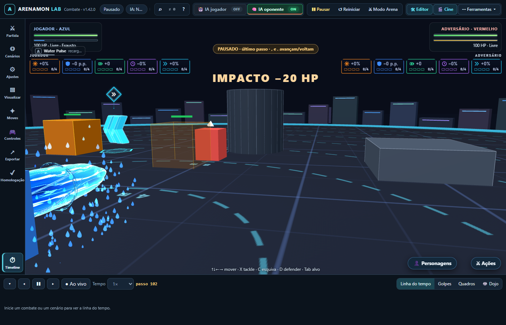

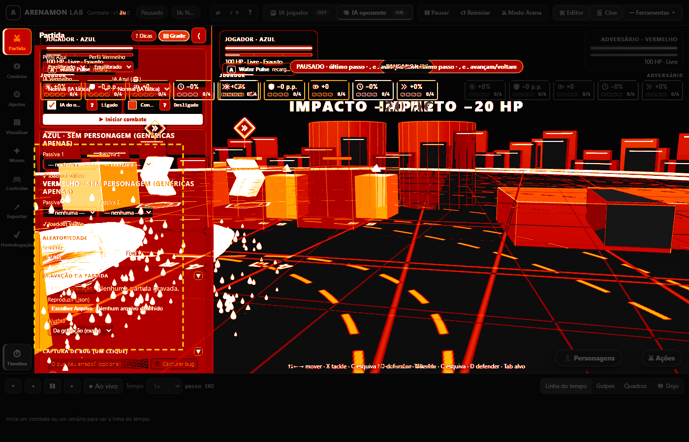
Diferença relevante FORA da ROI (28.3% dos pixels de fora): câmera, cena, HUD, layout ou instante mudaram — a ROI sozinha não isola o efeito, e dentro dela a mudança é ainda maior. ROI 4% (121880/126957 px diferentes), fora 71.74% (320247/1133043 px); 27.6% de todos os pixels diferentes estão na ROI. Análise (2026-10-28): Falha principal de layout: padrão global 64,9%, ROI 4,0%, fora 71,7% (na baseline o projétil está quase todo atrás do painel; agora aparece inteiro). Com o painel reaberto passa (global 99,02%, fora 99,87%), MAS a ROI fica em 78,86% (10.720 de 50.699 px), bem abaixo dos ~96% dos outros efeitos. Dentro da ROI há duas diferenças: gotas da trilha em outras posições (aleatoriedade) e a forma ciano junto ao lutador Azul (na baseline um chevron '>' inteiro; agora um bloco inclinado/cortado). No quadro há um chargeRelease cujo dono no despachante F5 inclui solid (solid-fx) e anim (characters); como o teste pausa o jogo, o canal solid fica acumulado (take('solid', vfxDt > 0)) em vez de ser desenhado. Hipótese a confirmar (não corrigida): o despachante F5 desta branch mudou QUANDO o sólido do chargeRelease aparece com o jogo pausado. Ver o achado no relatório da Task 12.
Candidata: baselines-candidatas/water-pulse-voo.png · aceitar: node prototypes/combat-lab/test/moves-vfx-parity.browser.mjs --aceitar=water-pulse-voo

water-pulse-splash
abaixo de 98% — precisa de decisão humana- Semelhança global
- 65.3%
- Dentro da ROI
- 36.9%
- Fora da ROI
- 69.31%
- Pixels diferentes (ROI / fora)
- 98360 / 338867
- Caixa ROI (px)
- x 323–705, y 204–610
- Dono (despachante F5)
- movesVfx (moves-vfx-registry → water-pulse.vfx.js, splash) · canal move

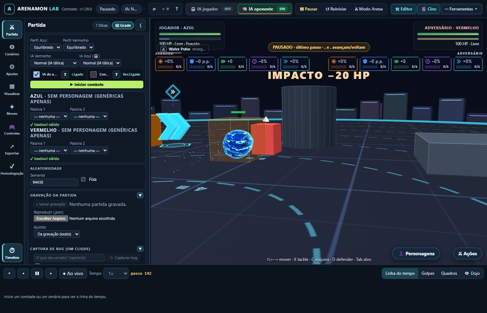

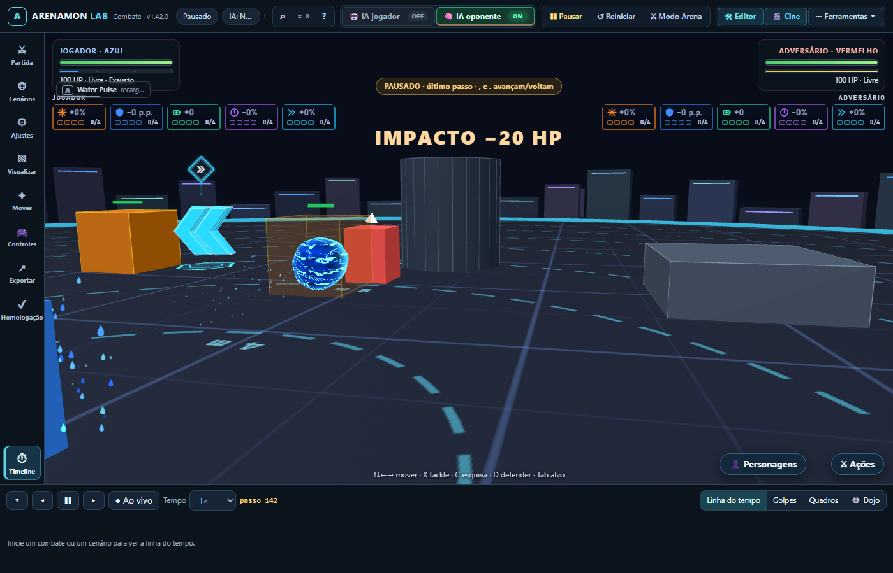

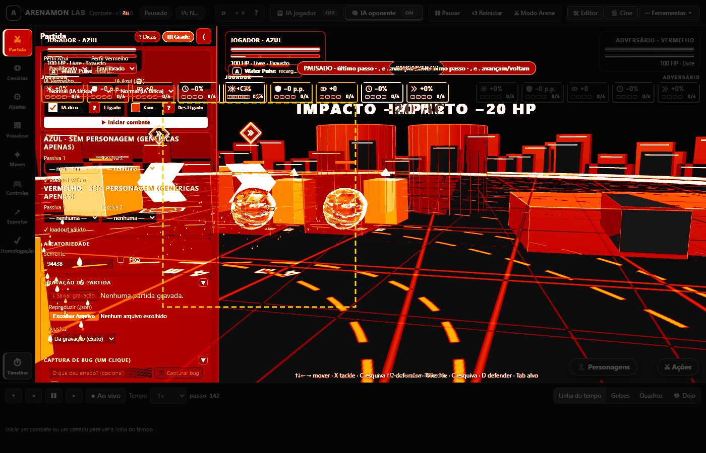
Diferença relevante FORA da ROI (30.7% dos pixels de fora): câmera, cena, HUD, layout ou instante mudaram — a ROI sozinha não isola o efeito, e dentro dela a mudança é ainda maior. ROI 36.9% (98360/155881 px diferentes), fora 69.31% (338867/1104119 px); 22.5% de todos os pixels diferentes estão na ROI. Análise (2026-10-28): Falha de layout, não do efeito. Padrão: global 65,3%, ROI 37,2%, fora 69,3%. Com o painel reaberto: global 99,43%, ROI 98,22%, fora 99,60% — o splash é o efeito mais estável dos cinco. impact (contato) e expire chegam ao movesVfx pelo canal move; destructibleHit no mesmo quadro tem dono (runtime/movesVfx) e o despachante não registrou desconhecidos. Não é regressão desta branch.
Candidata: baselines-candidatas/water-pulse-splash.png · aceitar: node prototypes/combat-lab/test/moves-vfx-parity.browser.mjs --aceitar=water-pulse-splash